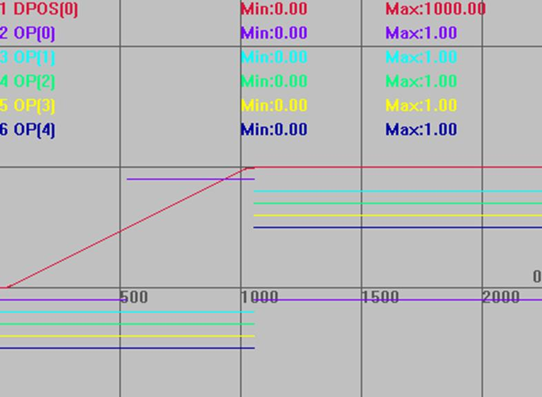
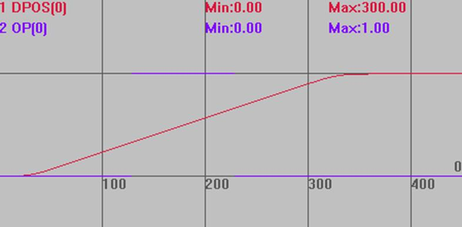
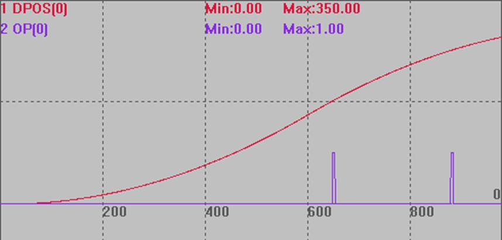

|
类型 |
特殊运动指令 |
|
描述 |
BASE轴运动缓冲加入一个输出口操作。 这个指令LOAD执行时不做任何运动，只操作输出口。语法同OP指令。
普通模式，误差在一个扫描周期，所有控制器都可使用。 精准位置输出模式，误差1微秒以内，4系列产品，20170421以上版本支持。 只有支持硬件比较输出的OP口才支持精准输出功能。 每个生效的精准输出MOVE_OP需要间隔1个周期时间才能继续生效，此间隔内新的MOVE_OP自动使用普通方式，超过此间隔，新MOVE_OP可继续生效。连续的MOVE_OP，因为没有间隔时间，只有第一个生效。（某些控制器可以多个精准输出同时触发，具体查看控制器硬件手册说明，例如ZMC420SCAN前8个输出口支持精准输出，而且每个输出口可以同时使用精准输出） MOVE_OP的个数不建议超过10个。 同时使用多个OP口的精准输出功能仅支持DPOS位置的比较输出，使用单个OP口时才支持MPOS位置的比较输出。 在控制器支持OP口独立的情况下，不同OP口就算多个轴MOVE_OP精准输出也不冲突，在OP口精准输出功能不独立的情况，同时使用精准功能可能冲突。 MOVE_OP精准功能基于BASE主轴，多个轴插补时，与BASE主轴ATYPE类型不一样的从轴，无法保证精准位置输出。 增加支持不同MOVE_OP指令可设置不同的精准参数，从而支持激光电源的us级控制，开启精准输出或延时输出等参数指令在MOVE_OP调用前设置即可。 4系列以上控制器，version_build: 20241029以后固件用MOVE_OP不影响平滑。 精准输出判断编码器是否到位，只能找尽可能的位置，哪个轴影响大就将该轴的细分设大一点。 |
|
语法 |
语法一：MOVE_OP ([ionum],value) ionum：输出编号，从0开始 value：输出状态，多个输出口操作时按位来指明多个口状态
语法二：MOVE_OP (ionum1, ionum2,value[,mask]) ionum1：要操作的第一个输出通道 ionum2：要操作的最后一个输出通道 value：输出状态，多个输出口操作时按位来指明多个口状态 mask：按位来设置值，指定哪些IO需要操作，不填时从第一个通道到最后一个通道都操作 |
|
适用控制器 |
通用 |
|
例子 |
例一：普通模式使用 BASE(0) UNITS=100 DPOS=0 SPEED=200 ACCEL=1000 DECEL=1000 TRIGGER '自动触发示波器 MOVE(500) MOVE_OP (0,ON) '等待上条运动完成后，OUT0口输出信号 MOVE(500) MOVE_OP (0,OFF) '等待上条运动完成后，OUT0口关闭信号 MOVE_OP(1,4,15) 'OUT1-4口输出信号，15对应二进制1111
轨迹曲线，为方便查看，进行了竖直偏移 DPOS(0)垂直刻度1000 OP(0)垂直刻度1,偏移-0.1 OP(1)垂直刻度1,偏移-0.2 OP(2)垂直刻度1,偏移-0.3 OP(3)垂直刻度1,偏移-0.4 OP(4)垂直刻度1,偏移-0.5 
例二：精准位置输出模式
BASE(0) UNITS=100 DPOS=0 SPEED=200 ACCEL=1000 DECEL=1000 TRIGGER '自动触发示波器 ATYPE=1 MERGE=1 AXIS_ZSET(0)=2 '开启MOVE_OP的精准输出功能 MOVE(100) MOVE_OP(0,1) '精准生效 MOVE(100) '超过2MS时间, 下个MOVE_OP可继续精准生效 MOVE_OP(0,0) '精准生效 MOVE(100)
轨迹曲线 DPOS(0)垂直刻度300 OP(0)垂直刻度1 
例三：编码器精准位置输出模式 20170505以上固件版本支持 DIM opnum AXIS_ZSET = 3+16 'BIT4支持编码器精确位置 BASE(0) ATYPE= 4 '轴使用脉冲加编码器类型，必须实际有接编码器线 DPOS=0 MPOS=0 UNITS=1000 SPEED= 1000 ACCEL = 1000 MERGE=1 TRIGGER opnum = 0 MOVEOP_DELAY = 2 '实际输出时间延迟2ms HW_TIMER(0, 10000, 5000, 1, 0, opnum)
OP(opnum,0) '初始化OP HW_TIMER(2, 10000, 5000, 1, 0, opnum) '输出变为on后, 5000us 后切换为off MOVE(200) MOVE_OP(opnum,1) '输出on后靠HW_TIMER来延时关闭，延时5ms后关闭 MOVE(100) MOVE_OP(opnum,1) MOVE(50) END
轨迹曲线 DPOS(0)垂直刻度200 OP(0)垂直刻度2  |
|
相关指令 |
精准位置输出模式 SYSTEM_ZSET，AXIS_ZSET |